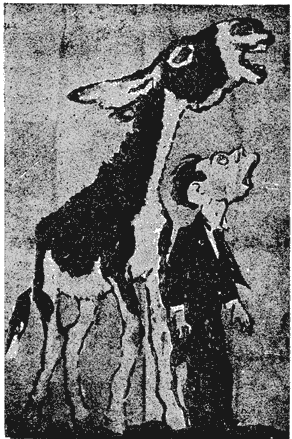
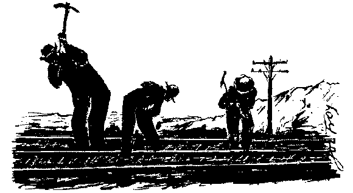

Chapter 2 - How the I. W. W. Functions
The I. W. W. has no President nor Vice-Presidents, no lobbyists in Washington nor politicians to clutter up or obstruct the workers in running their union and economic affairs. A General Secretary-Treasurer is nominated and elected by General Referendum ballot, voted on by all members of the I. W. W. The G.S.T. is elected for only one year and cannot serve more than three terms in office. The G.S.T. has no legislative power, only executive authority over headquarters and the Clearing house and must carry out the dictates of the membership as laid down in conventions and by referendum ballot.
GENERAL EXECUTIVE BOARD
Each industrial union elects a General Executive Board member. This Board is in continuous session, by mail, without pay, except when actively engaged in organization work. This Board meets on the call of their chairman or the Industrial Unions and acts on matters that spring up between conventions and referendums.
The G.E.B. is not a legislative body but merely executive in character. Anything legislative arising must be submitted to the Industrial Union Membership or the I. W .W. membership as a whole as the case might be.
The General Sec'y Treas. and the General Executive Board, when elected become members at large and represent the whole I. W. W. membership.
The G.E.B. co-ordinates the work of the entire organization, secures co-operation between all Industrial Unions and other component parts, and guides the policy of its press and its educational work.
GENERAL ORGANIZATION COMMITTEES
Each Industrial Union elects a General Organization Committee from the ranks of the workers in that industry. The size of this committee is decided by the Industrial Union in accord with the size of the membership and the districts to be covered, which is large in I.U. 520.
This organization committee functions without pay—except when actually engaged in organization work. This is decided by the G.O.C. as a whole and the membership.
No General Official nor I. U. Official has the power to call a strike on or off. That is decided by the membership directly concerned.
CLEARING HOUSE
The Clearing House was created to eliminate duplication of work and hold expenses to the minimum. All General and Industrial Union funds and records go through the Clearing House and are credited to and deposited to the part of the organization to which they belong.
The General Secretary-Treasurer and the bookkeeper and such necessary help as is essential for the office work are paid through the Clearing House.
The expense of the Clearing House is divided pro rata among the Industrial Unions according to the number of dues stamps each uses.
Industrial Union Branches elect their own Branch Secretary and retain their own Branch Treasury and elect such committees in their locality as they deem necessary.
INDUSTRIAL SOLIDARITY
Industrial Union Councils can be formed in a district by the various branches of the same Industrial Union. Industrial District Councils can be formed in a district by the different Industrial Union Branches.
Industrial Unions can draw up their own by-laws governing themselves as long as they do not conflict with the principle of the I. W .W. and the General Constitution and by-laws.
Job delegates or local organizers are appointed by the General Organization Committee or by the Branch Secretary on the recommendation of members of the union.
IN GENERAL
The foregoing is an outline of industrial organization in conformity with industrial structure.
The I. W. W. provides a tested plan for the democratic organization of the working class so that
- 1) all workers on the same job, regardless of craft, belong in the same job organization;
- 2) all workers in the same industry belong in the same industrial union;
- 3) all members of these Industrial Unions are directly members of the One Big Union of the entire working class;
- 4) any worker changing his job is entitled to transfer free of any charge to the Industrial Union covering his new employment: "Once a union man, always a union man."
It is truly a "union of one for all and all for one."
